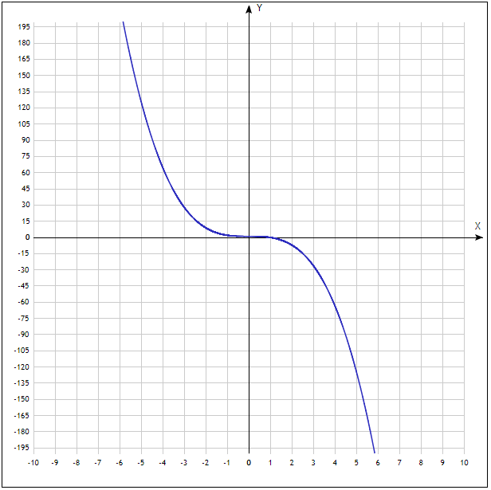

Существует ли непрерывная функция, для которой f(f(x)) = 1-x^3?
График функции приведен ниже. Как видно, функция монотонно убывающая на всей области определения, причем строго убывающая
(т.е. для каждой пары значений х_1 < х_2 выполняется f(x_1) > f(x_2)).

Кроме того, эта функция взаимнообднозначная, или биективная (в силу того факта, что она строго монотонно убывает и утверждения:
"Если функция строго монотонно возрастает или строго монотонно убывает на промежутке, то она взаимнооднозначна на этом промежутке.").
Следовательно, раз функция f(f(x)) взаимнооднозначна (т.е. каждому образу соответствует ровно один прообраз и наоборот), то и
функция f(x) взаимнооднозначная.
Т.к. взаимная однозначность функции f(x) подразумевает, что для каждой пары х_1 < х_2 выполнено, что f(x_1) != f(x_2), то
либо f(x_1) > f(x_2), либо f(x_1) < f(x_2). Таким образом, f(x) строго монотонна (либо строго убывает, либо строго возрастает) (по определению).
Рассмотрим все возможные в данной ситуации случаи.
Пусть функция f непрерывна и строго убывает. Тогда f(f(x)) будет строго возрастающей: т.е., для каждой пары х_1 < х_2
f(x_1) > f(x_2). Тогда f(f(x_1)) < f(f(x_2)) в силу направления строгой монотонности функции f и того, что f(x_1) > f(x_2).
Пусть функция f непрерывна и строго возрастает. Тогда f(f(x)) снова будет строго возрастающей: т.е., для каждой пары х_1 < х_2
f(x_1) < f(x_2). Тогда f(f(x_1)) < f(f(x_2)) в силу направления строгой монотонности функции f и того, что f(x_1) < f(x_2).
Таким образом, в любом случае получаем, что фукнция f(f(x)) строго возрастает. ОДнако по условиям задачи, функция является строго убывающей.
Получаем противоречие, из которго следует, что не существует непрерывной функции, дла которой f(f(x)) = 1-x^3.
Напишите программу, которая определит наличие лишних скобок в выражении. Результат программы – 0 или 1
Дан массив размера n, найдите главный элемент. Главным называется элемент,который входит в массив более чем floor(n/2) раз.